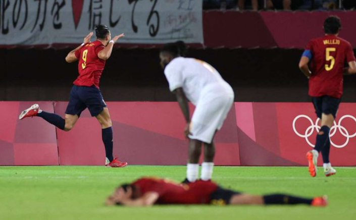

Futbol olimpiadasidasi.Ispaniya5,Meksika 6gol urdi,
yarimfinal juftliklari ma'lum
futbol bo'yicha baxslarda 1/4 final uchrashuvlari bo'ldi.O'ylarning birida 7,
boshqasida 9 gol urdi

58 soniyada xaloskor gol
Ispaniya-kot'-d'lvuar5:2
Gollar:0:1Bayi, 1:1-30 olmo,1:2-90 Greland,2:2rafa mir,3:2-98, penaltiy Oyrasabol,
4:2-117 Rufa Mir, 5:2-120 rufa Mir
Uy ishi 1 Uy ishi 2 Uy ishi 3